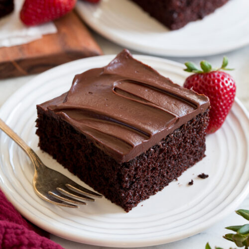

Chocolate cake

Description
This chocolate cake recipe is simple to make, reliable and delicious. It can easily turn into your favorite comfort food after you try it for the first time.
It is one of the fluffiest cakes i've ever baked, and you can use different types of chocolate on the ganache, guaranteeing a nice variety using the same base recipe.
Ingredients
Cake
- 1 cup of flour
- 1/2 cup of cocoa powder
- 1 cup of sugar
- 1 teaspoon of baking powder
- 1/2 teaspoon of baking soda
- 1/2 teaspoon of salt
- 1 egg
- 1/4 cup of oil
- 1/2 cup of milk
- 1 teaspoon of vanilla essence
- 1/2 cup of hot water
Ganache
- 100g of dark chocolate*
- 100g of milk chocolate*
- 200g of heavy cream
*The chocolates can be swapped by any type you like!
Steps
Cake
- Grease a pan with oil
- Heat the water, but do not allow it to boil.
- Preheat the oven to 170°C
- In a bowl, add the flour, cocoa powder, sugar, salt, baking powder and baking soda. Mix them well.
- Add the egg, oil, milk and vanilla essence. Mix until it forms a thick, smooth batter.
- Add the hot water and mix again. The batter may seem a little thin, but don't worry. It is supposed to be like this.
- Pour the batter into the oiled pan
- Bake for 35 to 45 minutes.
Ganache
- Add the 200g of chocolate to a bowl.
- Pour the cream on top of the chocolate and use a double boiler to melt everything together. Don't stop mixing until all the chocolate is melted or it might burn.
- Apply the ganache on top of the cake. Wait until it cools down if you want a firmer texture.
And it's done! Enjoy your delicious chocolate cake! :3